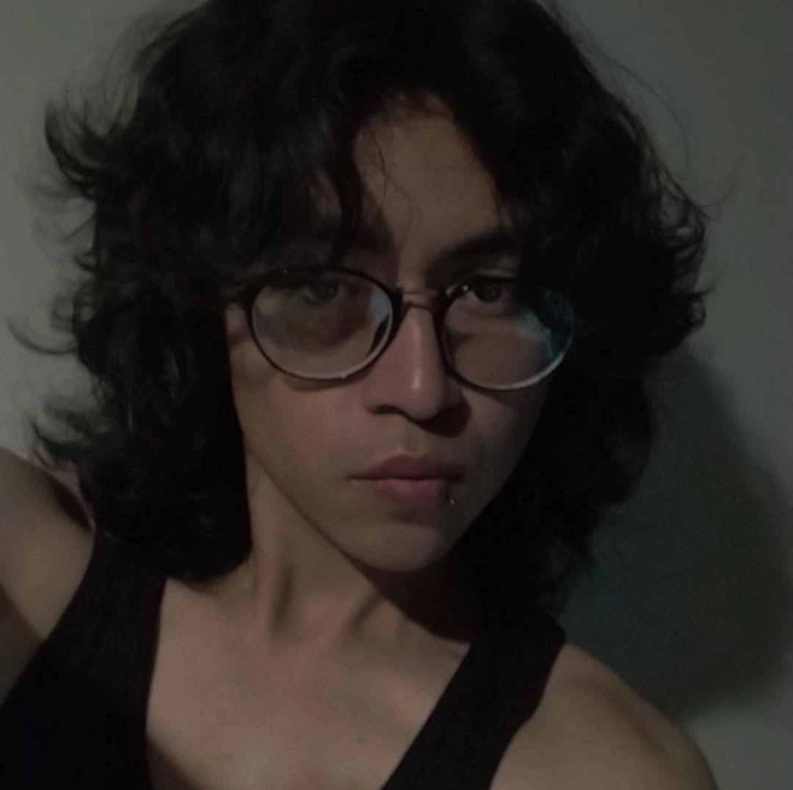
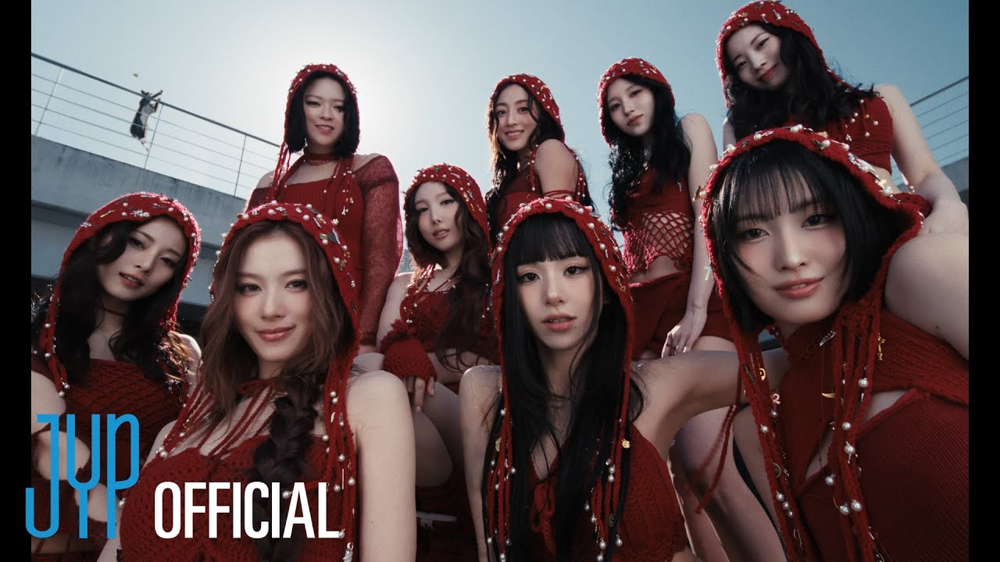
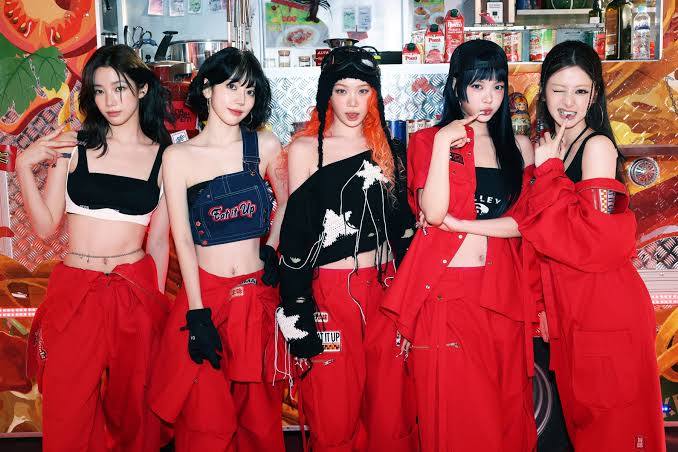
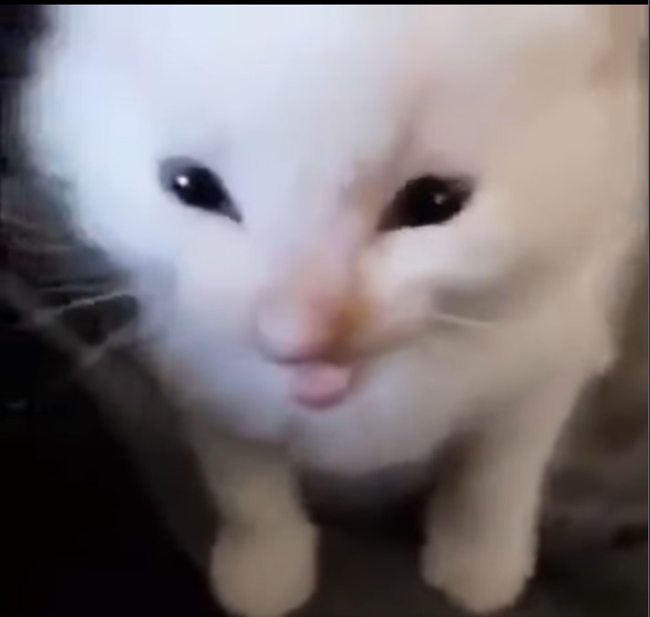
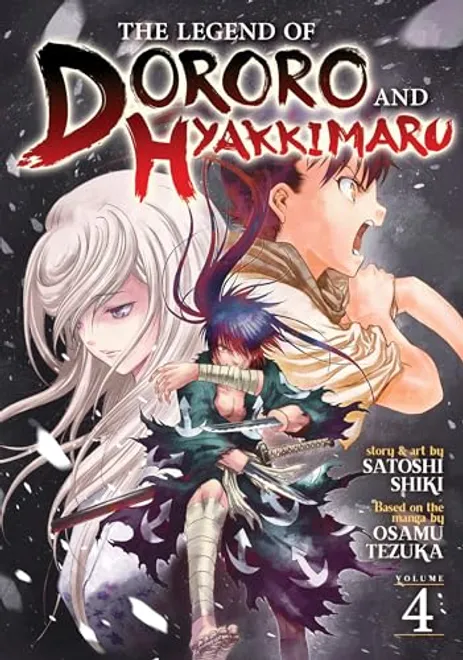
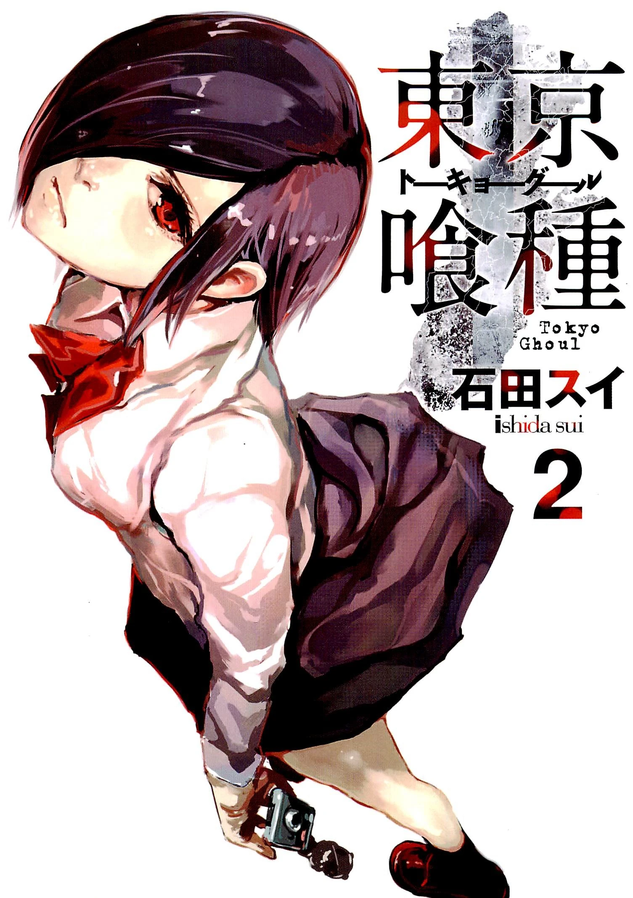
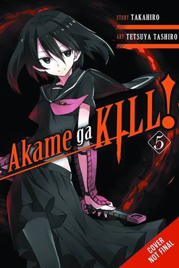

¿Soy el ello, el yo o el super yo?
Me presento, soy un estudiante de la ingenieria de desarrollo de software multiplataforma si bien apenas voy en iniciando en todo esto, te compartire cosas sobre mi.

Me presento, soy un estudiante de la ingenieria de desarrollo de software multiplataforma si bien apenas voy en iniciando en todo esto, te compartire cosas sobre mi.
tuve varias facetas durante mi adolecencia y niñez y esto me ayudo a definir 3 de mis bandas favoritas que no han cambiado en muchos años y son: twice, le sserafim, linkin park, la banda ms y the strokes
Algunas de mis series favoritass de todos los tiempos son el maravilloso mundo de gumball, hora de aventura, de ves en cuanto me gusta ver peliculas de terror, aunque soy mas fan de las comedias siendo las comedias romanticas uno de los tipos de series que mas me entretienen por ejemplo sonno bisquet doll
En mi tiempo libre me gusta jugar videojuegos aunque no soy el mejor del mundo me considero bastante habil para la mayoria en especifico shooters siendo halo una de las franquicias que mas he llegado a apreciar desde mi niñez
Sabías que una de las razones por la alta creencia en dragones es la siguiente:
En los mapas antiguos se escribía la frase en latín "Hic sunt dracones" (que se traduce como "Aquí hay dragones") para advertir sobre territorios inexplorados, desconocidos o considerados peligrosos.
Twice es un grupo femenino surcoreano formado por JYP Entertainment a través del programa llamado Sixteen. El grupo consta de nueve integrantes: Nayeon, Jeongyeon, Momo, Sana, Jihyo, Mina, Dahyun, Chaeyoung y Tzuyu. Twice debutó oficialmente el 20 de octubre de 2015 con el lanzamiento del miniálbum The Story Begins.

Le Sserafim es un grupo femenino surcoreano formado por Source Music. Está compuesto actualmente por cinco miembros: Sakura, Chaewon, Yunjin, Kazuha y Eunchae. Originalmente siendo un grupo de seis miembros, Garam dejó el grupo en julio de 2022. El grupo hizo su debut oficial el 2 de mayo de 2022 con el EP Fearless.

AAAAAAAAAAAAAAAAAAAAAAAAAAAAAAAAAAAAAAAAAAAAAAAAAAAAAAAAAAAAAAAAAAAAAAAAAAAAAAAAAAAAAAAAAAAAA AAAAAAAAAAAAAAAAAAAAAAAAAAAAAAAAAAAAAAAAAAAAAAAAAAAAAAAAAAAAAAAAAAAAAAAAAAAAAAAAAAAAAAAAAAAAAAAAAAAAAAAAAA



